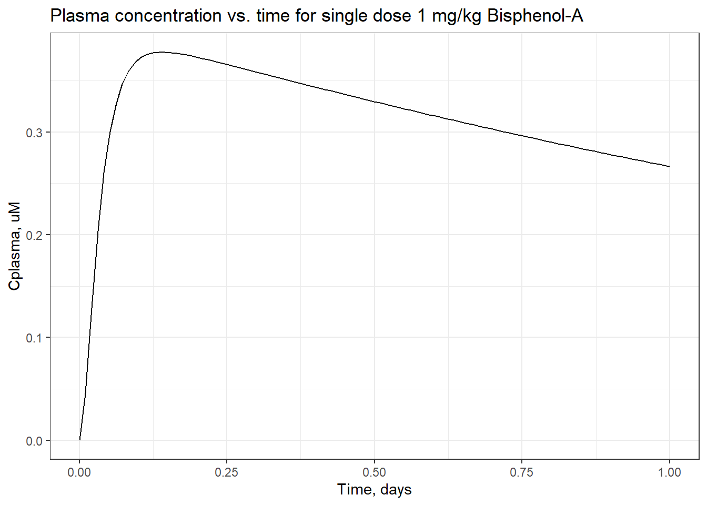
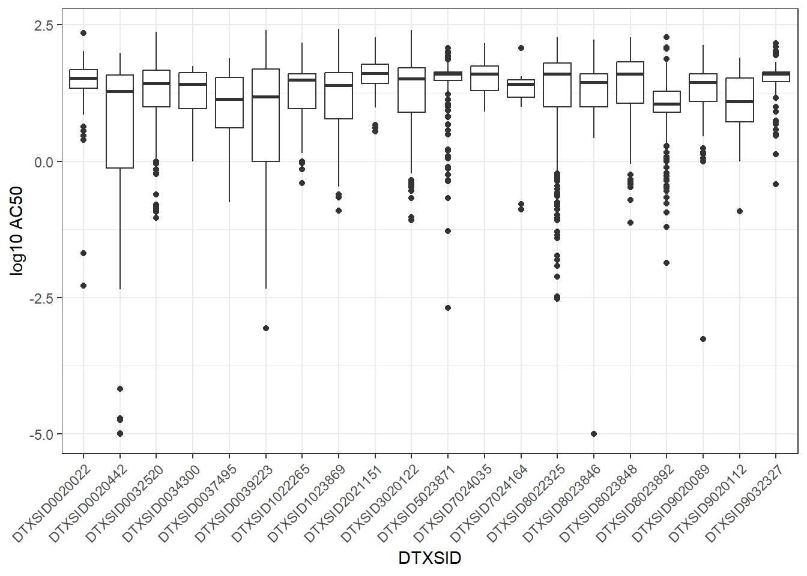
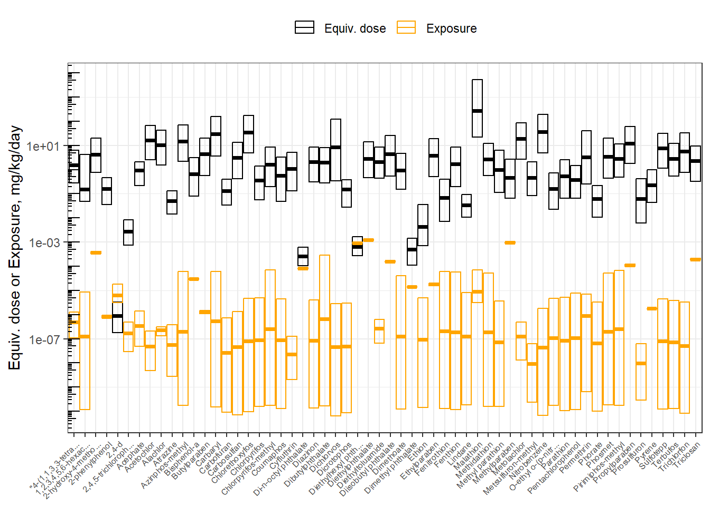

6.6 Toxicokinetic Modeling
This training module was developed by Caroline Ring, Lauren E. Koval, and Julia E. Rager.
All input files (script, data, and figures) can be downloaded from the UNC-SRP TAME2 GitHub website.
Disclaimer: The views expressed in this document are those of the author and do not necessarily reflect the views or policies of the U.S. EPA.
Introduction to Training Module
This module serves as an example to guide trainees through the basics of toxicokinetic (TK) modeling and how this type of modeling can be used in the high-throughput setting for environmental health research applications.
In this activity, the capabilities of a high-throughput toxicokinetic modeling package titled ‘httk’ are demonstrated on a suite of environmentally relevant chemicals. The httk R package implements high-throughput toxicokinetic modeling (hence, ‘httk’), including a generic physiologically based toxicokinetic (PBTK) model as well as tables of chemical-specific parameters needed to solve the model for hundreds of chemicals. In this activity, the capabilities of ‘httk’ are demonstrated and explored. Example modeling estimates are produced for the high interest environmental chemical, bisphenol-A. Then, an example script is provided to derive the plasma concentration at steady state for an example environmental chemical, bisphenol-A.
The concept of reverse toxicokinetics is explained and demonstrated, again using bisphenol-A as an example chemical.
This module then demonstrates the derivation of the bioactivity-exposure ratio (BER) across many chemicals leveraging the capabilities of httk, while incorporating exposure measures. BERs are particularly useful in the evaluation of chemical risk, as they take into account both toxicity (i.e., in vitro potency) and exposure rates, the two essential components used in risk calculations for chemical safety and prioritization evaluations. Therefore, the estimates of both potency and exposure and needed to calculate BERs, which are described in this training module.
For potency estimates, the ToxCast high-throughput screening library is introduced as an example high-throughput dataset to carry out in vitro to in vivo extrapolation (IVIVE) modeling through httk. ToxCast activity concentrations that elicit 50% maximal bioactivity (AC50) are uploaded and organized as inputs, and then the tenth percentile ToxCast AC50 is calculated for each chemical (in other words, across all ToxCast screening assays, the tenth percentile of AC50 values were carried forward). These concentration estimates then serve as concentration estimates for potency. For exposure estimates, previously generated exposure estimates that have been inferred from CDC NHANES urinary biomonitoring data are used.
The bioactivity-exposure ratio (BER) is then calculated across chemicals with both potency and exposure estimate information. This ratio is simply calculated as the ratio of the lower-end equivalent dose (for the most-sensitive 5% of the population) divided by the upper-end estimated exposure (here, the upper bound on the inferred population median exposure). Chemicals are then ranked based on resulting BERs and visualized through plots. The importance of these chemical prioritization are then discussed in relation to environmental health research and corresponding regulatory decisions.
Introduction to Toxicokinetic Modeling
To understand what toxicokinetic modeling is, consider the following scenario:

Simply put, toxicokinetics answers these questions by describing “what the body does to the chemical” after an exposure scenario.
More technically, toxicokinetic modeling refers to the evaluation of the uptake and disposition of a chemical in the body.
Notes on terminology
Pharmacokinetics (PK) is a synonym for toxicokinetics (TK). They are often used interchangeably. PK connotes pharmaceuticals; TK connotes environmental chemicals – but those connotations are weak.
A common abbreviation that you will also see in this research field is ADME, which stands for:
Absorption: How does the chemical get absorbed into the body tissues?
Distribution: Where does the chemical go inside the body?
Metabolism: How do enzymes in the body break apart the chemical molecules?
Excretion: How does the chemical leave the body?
To place this term into the context of TK, TK models describe ADME mathematically by representing the body as compartments and flows.
Types of TK models
TK models describe the body mathematically as one or more “compartments” connected by “flows.” The compartments represent organs or tissues. Using mass balance equations, the amount or concentration of chemical in each compartment is described as a function of time.
Types of models discussed throughout this training module are described here.
1 Compartment Model
The simplest TK model is a 1-compartment model, where the body is assumed to be one big well-mixed compartment.
3 Compartment Model
A 3-compartment model mathematically incorporates three distinct body compartments, that can exhibit different parameters contributing to their individual mass balance. Commonly used compartments in 3-compartment modeling can include tissues like blood plasma, liver, gut, kidney, and/or ‘rest of body’ terms; though the specific compartments included depend on the chemical under evaluation, exposure scenario, and modeling assumptions.
PBTK Model
A physiologically-based TK (PBTK) model incorporates compartments and flows that represent real physiological quantities (as opposed to the aforementioned empirical 1- and 3-compartment models). PBTK models have more parameters overall, including parameters representing physiological quantities that are known a priori based on studies of anatomy. The only PBTK model parameters that need to be estimated for each new chemical are parameters representing chemical-body interactions, which can include the following:
- Rate of hepatic metabolism of chemical: How fast does liver break down chemical?
- Plasma protein binding: How tightly does the chemical bind to proteins in blood plasma? Liver may not be able to break down chemical that is bound to plasma protein.
- Blood:tissue partition coefficients: Assuming chemical diffuses between blood and other tissues very fast compared to the rate of blood flow, the ratio of concentration in blood to concentration in each tissue is approximately constant = partition coefficient.
- Rate of active transport into/out of a tissue: If chemical moves between blood and tissues not just by passive diffusion, but by cells actively transporting it in or out of the tissue
- Binding to other tissues: Some chemical may be bound inside a tissue and not available for diffusion or transport in/out
Types of TK modeling can also fall into the following major categories:
1. Forward TK Modeling: Where external exposure doses are converted into internal doses (or concentrations of chemicals/drugs in one or more body tissues of interest)
2. Reverse TK Modeling: The reverse of the above, where internal doses are converted into external exposure doses.
Other TK modeling resources
For further information on TK modeling background, math, and example models, there are additional resources online including a helpful course website on Basic Pharmacokinetics by Dr. Bourne.
Script Preparations
Installing required R packages
If you already have these packages installed, you can skip this step, or you can run the below code which checks installation status for you
if(!nzchar(system.file(package = "ggplot2"))){
install.packages("ggplot2")}
if(!nzchar(system.file(package = "reshape2"))){
install.packages("reshape2")}
if(!nzchar(system.file(package = "stringr"))){
install.packages("stringr")}
if(!nzchar(system.file(package = "httk"))){
install.packages("httk")}
if(!nzchar(system.file(package = "eulerr"))){
install.packages("eulerr")}Loading R packages required for this session
library(ggplot2) # ggplot2 will be used to generate associated graphics
library(reshape2) # reshape2 will be used to organize and transform datasets
library(stringr) # stringr will be used to aid in various data manipulation steps through this module
library(httk) # httk package will be used to carry out all toxicokinetic modeling steps## Warning: package 'httk' was built under R version 4.4.3## Warning: package 'eulerr' was built under R version 4.4.1For more information on the ggplot2 package, see its associated CRAN webpage and RDocumentation webpage.
For more information on the reshape2 package, see its associated CRAN webpage and RDocumentation webpage.
For more information on the stringr package, see its associated CRAN webpage and RDocumentation webpage.
For more information on the httk package, see its associated CRAN webpage and parent publication by Pearce et al. (2017).
More information on the httk package
You can see an overview of the httk package by typing ?httk at the R command line.
You can see a browsable index of all functions in the httk package by typing help(package="httk") at the R command line.
You can see a browsable list of vignettes by typing browseVignettes("httk") at the R command line. (Please note that some of these vignettes were written using older versions of the package and may no longer work as written – specifically the Ring (2017) vignette, which I wrote back in 2016. The httk team is actively working on updating these.)
You can get information about any function in httk, or indeed any function in any R package, by typing help() and placing the function name in quotation marks inside the parentheses. For example, to get information about the httk function solve_model(), type this:
Note that this module was run with httk version 2.4.0.
Training Module’s Environmental Health Questions
This training module was specifically developed to answer the following environmental health questions:
After solving the TK model that evaluates bisphenol-A, what is the maximum concentration of bisphenol-A estimated to occur in human plasma, after 1 exposure dose of 1 mg/kg/day?
After solving the TK model that evaluates bisphenol-A, what is the steady-state concentration of bisphenol-A estimated to occur in human plasma, for a long-term oral infusion dose of 1 mg/kg/day?
What is the predicted range of bisphenol-A concentrations in plasma that can occur in a human population, assuming a long-term exposure rate of 1 mg/kg/day and steady-state conditions? Provide estimates at the 5th, 50th, and 95th percentile?
Considering the chemicals evaluated in the above TK modeling example, do the \(C_{ss}\)-dose slope distributions become wider as the median \(C_{ss}\)-dose slope increases?
How many chemicals have available AC50 values to evaluate in the current ToxCast/Tox21 high-throughput screening database?
What are the chemicals with the three lowest predicted equivalent doses (for tenth-percentile ToxCast AC50s), for the most-sensitive 5% of the population?
Based on httk modeling estimates, are chemicals with higher bioactivity-exposure ratios always less potent than chemicals with lower bioactivity-exposure ratios?
Based on httk modeling estimates, do chemicals with higher bioactivity-exposure ratios always have lower estimated exposures than chemicals with lower bioactivity-exposure ratios?
How are chemical prioritization results different when using only hazard information vs. only exposure information vs. bioactivity-exposure ratios?
Of the three datasets used in this training module – bioactivity from ToxCast, TK data from httk, and exposure inferred from NHANES urinary biomonitoring – which one most limits the number of chemicals that can be prioritized using BERs?
Data and Models used in Toxicokinetic Modeling (TK)
Common Models used in TK Modeling, that are Provided as Built-in Models in httk
There are five TK models currently built into httk. They are:
- pbtk: A physiologically-based TK model with oral absorption. Contains the following compartments: gutlumen, gut, liver, kidneys, veins, arteries, lungs, and the rest of the body. Chemical is metabolized by the liver and excreted by the kidneys via glomerular filtration.
- gas_pbtk: A PBTK model with absorption via inhalation. Contains the same compartments as
pbtk. - 1compartment: A simple one-compartment TK model with oral absorption.
- 3compartment: A three-compartment TK model with oral absorption. Compartments are gut, liver, and rest of body.
- 3compartmentss: The steady-state solution to the 3-compartment model under an assumption of constant infusion dosing, without considering tissue partitioning. This was the first httk model (see Wambaugh et al. 2015, Wetmore et al. 2012, Rotroff et al. 2010).
Chemical-Specific TK Data Built Into ‘httk’
Each of these TK models has chemical-specific parameters. The chemical-specific TK information needed to parameterize these models is built into httk, in the form of a built-in lookup table in a data.frame called chem.physical_and_invitro.data. This lookup table means that in order to run a TK model for a particular chemical, you only need to specify the chemical.
Look at the first few rows of this data.frame to see everything that’s in there (it is a lot of information).
## Compound CAS
## 2971-36-0 2,2-bis(4-hydroxyphenyl)-1,1,1-trichloroethane (hpte) 2971-36-0
## 94-75-7 2,4-d 94-75-7
## 94-82-6 2,4-db 94-82-6
## 90-43-7 2-phenylphenol 90-43-7
## 1007-28-9 6-desisopropylatrazine 1007-28-9
## 71751-41-2 Abamectin 71751-41-2
## CAS.Checksum DTXSID Formula
## 2971-36-0 TRUE DTXSID8022325 C14H11Cl3O2
## 94-75-7 TRUE DTXSID0020442 C8H6Cl2O3
## 94-82-6 TRUE DTXSID7024035 C10H10Cl2O3
## 90-43-7 TRUE DTXSID2021151 C12H10O
## 1007-28-9 TRUE DTXSID0037495 C5H8ClN5
## 71751-41-2 TRUE DTXSID8023892 <NA>
## All.Compound.Names
## 2971-36-0 2,2-bis(4-hydroxyphenyl)-1,1,1-trichloroethane (hpte)|2,2-bis(4-hydroxyphenyl)-1,1,1-trichloroethane|Dtxsid8022325|2971-36-0
## 94-75-7 2,4-d|Dichlorophenoxy|2,4-dichlorophenoxyacetic acid|94-75-7|Dtxsid0020442
## 94-82-6 2,4-db|Dtxsid7024035|94-82-6|2,4-dichlorophenoxybutyric acid
## 90-43-7 2-phenylphenol|Dtxsid2021151|90-43-7
## 1007-28-9 6-desisopropylatrazine|Deisopropylatrazine|Dtxsid0037495|1007-28-9
## 71751-41-2 Abamectin|71751-41-2
## logHenry logHenry.Reference logMA logMA.Reference logP
## 2971-36-0 -7.179 EPA-CCD-OPERA NA <NA> 4.622
## 94-75-7 -8.529 EPA-CCD-OPERA NA <NA> 2.809
## 94-82-6 -8.833 EPA-CCD-OPERA NA <NA> 3.528
## 90-43-7 -7.143 EPA-CCD-OPERA 3.46 Endo 2011 3.091
## 1007-28-9 -8.003 EPA-CCD-OPERA NA <NA> 1.150
## 71751-41-2 NA <NA> NA <NA> 4.480
## logP.Reference logPwa logPwa.Reference logWSol logWSol.Reference
## 2971-36-0 EPA-CCD-OPERA 4.528 EPA-CCD-OPERA -3.707 EPA-CCD-OPERA
## 94-75-7 EPA-CCD-OPERA 5.840 EPA-CCD-OPERA -2.165 EPA-CCD-OPERA
## 94-82-6 EPA-CCD-OPERA 4.998 EPA-CCD-OPERA -3.202 EPA-CCD-OPERA
## 90-43-7 EPA-CCD-OPERA 6.108 EPA-CCD-OPERA -1.812 EPA-CCD-OPERA
## 1007-28-9 EPA-CCD-OPERA 6.989 EPA-CCD-OPERA -2.413 EPA-CCD-OPERA
## 71751-41-2 Tonnelier 2012 NA <NA> NA <NA>
## MP MP.Reference MW MW.Reference pKa_Accept
## 2971-36-0 171.40 EPA-CCD-OPERA 317.6 EPA-CCD-OPERA
## 94-75-7 140.60 EPA-CCD-OPERA 221.0 EPA-CCD-OPERA
## 94-82-6 118.10 EPA-CCD-OPERA 249.1 EPA-CCD-OPERA
## 90-43-7 59.03 EPA-CCD-OPERA 170.2 EPA-CCD-OPERA
## 1007-28-9 155.00 EPA-CCD-OPERA 173.6 EPA-CCD-OPERA 3.41
## 71751-41-2 NA <NA> 819.0 Tonnelier 2012
## pKa_Accept.Reference pKa_Donor pKa_Donor.Reference All.Species
## 2971-36-0 ChemAxon 9.63,10.2 ChemAxon Human
## 94-75-7 ChemAxon 2.81 ChemAxon Human|Rat
## 94-82-6 ChemAxon 3.58 ChemAxon Human
## 90-43-7 ChemAxon 9.69 ChemAxon Human
## 1007-28-9 ChemAxon ChemAxon Human
## 71751-41-2 ChemAxon 12.5,13.2,13.8 ChemAxon Human
## Dog.Foral Dog.Foral.Reference DTXSID.Reference Formula.Reference
## 2971-36-0 NA <NA> EPA-CCD-OPERA EPA-CCD-OPERA
## 94-75-7 NA <NA> EPA-CCD-OPERA EPA-CCD-OPERA
## 94-82-6 NA <NA> EPA-CCD-OPERA EPA-CCD-OPERA
## 90-43-7 NA <NA> EPA-CCD-OPERA EPA-CCD-OPERA
## 1007-28-9 NA <NA> EPA-CCD-OPERA EPA-CCD-OPERA
## 71751-41-2 NA <NA> EPA-CCD-OPERA <NA>
## Human.Caco2.Pab Human.Caco2.Pab.Reference Human.Clint
## 2971-36-0 <NA> <NA> 136.5
## 94-75-7 13.4,7.44,24.1 Honda 2025 0
## 94-82-6 <NA> <NA> 0
## 90-43-7 <NA> <NA> 2.077
## 1007-28-9 52.4,29.2,94.3 Honda 2025 0
## 71751-41-2 <NA> <NA> 5.24
## Human.Clint.pValue Human.Clint.pValue.Reference
## 2971-36-0 0.0000357 Wetmore 2012
## 94-75-7 0.1488000 Wetmore 2012
## 94-82-6 0.1038000 Wetmore 2012
## 90-43-7 0.1635000 Wetmore 2012
## 1007-28-9 0.5387000 Wetmore 2012
## 71751-41-2 0.0009170 Wetmore 2012
## Human.Clint.Reference Human.Fabs Human.Fabs.Reference Human.Fgut
## 2971-36-0 Wetmore 2012 NA <NA> NA
## 94-75-7 Wetmore 2012 NA <NA> NA
## 94-82-6 Wetmore 2012 NA <NA> NA
## 90-43-7 Wetmore 2012 NA <NA> NA
## 1007-28-9 Wetmore 2012 NA <NA> NA
## 71751-41-2 Wetmore 2012 NA <NA> NA
## Human.Fgut.Reference Human.Fhep Human.Fhep.Reference Human.Foral
## 2971-36-0 <NA> NA <NA> NA
## 94-75-7 <NA> NA <NA> NA
## 94-82-6 <NA> NA <NA> NA
## 90-43-7 <NA> NA <NA> NA
## 1007-28-9 <NA> NA <NA> NA
## 71751-41-2 <NA> NA <NA> NA
## Human.Foral.Reference Human.Funbound.plasma
## 2971-36-0 <NA> 0
## 94-75-7 <NA> 0.04001
## 94-82-6 <NA> 0.006623
## 90-43-7 <NA> 0.04105
## 1007-28-9 <NA> 0.4588
## 71751-41-2 <NA> 0.06687
## Human.Funbound.plasma.Reference Human.Rblood2plasma
## 2971-36-0 Wetmore 2012 NA
## 94-75-7 Wetmore 2012 2.11
## 94-82-6 Wetmore 2012 NA
## 90-43-7 Wetmore 2012 NA
## 1007-28-9 Wetmore 2012 NA
## 71751-41-2 Wetmore 2012 NA
## Human.Rblood2plasma.Reference
## 2971-36-0 <NA>
## 94-75-7 Cabral (2003) Chemosphere 51:47–54; Van Ravenzwaay (2003) Xenobiotica 33(8):805–821
## 94-82-6 <NA>
## 90-43-7 <NA>
## 1007-28-9 <NA>
## 71751-41-2 <NA>
## Monkey.Foral Monkey.Foral.Reference Mouse.Foral
## 2971-36-0 NA <NA> NA
## 94-75-7 NA <NA> NA
## 94-82-6 NA <NA> NA
## 90-43-7 NA <NA> NA
## 1007-28-9 NA <NA> NA
## 71751-41-2 NA <NA> NA
## Mouse.Foral.Reference Mouse.Funbound.plasma
## 2971-36-0 <NA> <NA>
## 94-75-7 <NA> <NA>
## 94-82-6 <NA> <NA>
## 90-43-7 <NA> <NA>
## 1007-28-9 <NA> <NA>
## 71751-41-2 <NA> <NA>
## Mouse.Funbound.plasma.Reference Rabbit.Funbound.plasma
## 2971-36-0 <NA> <NA>
## 94-75-7 <NA> <NA>
## 94-82-6 <NA> <NA>
## 90-43-7 <NA> <NA>
## 1007-28-9 <NA> <NA>
## 71751-41-2 <NA> <NA>
## Rabbit.Funbound.plasma.Reference Rat.Clint Rat.Clint.pValue
## 2971-36-0 <NA> <NA> NA
## 94-75-7 <NA> 0 0.1365
## 94-82-6 <NA> <NA> NA
## 90-43-7 <NA> <NA> NA
## 1007-28-9 <NA> <NA> NA
## 71751-41-2 <NA> <NA> NA
## Rat.Clint.pValue.Reference Rat.Clint.Reference Rat.Foral
## 2971-36-0 <NA> <NA> NA
## 94-75-7 Wetmore 2013 Wetmore 2013 1
## 94-82-6 <NA> <NA> NA
## 90-43-7 <NA> <NA> NA
## 1007-28-9 <NA> <NA> NA
## 71751-41-2 <NA> <NA> NA
## Rat.Foral.Reference Rat.Funbound.plasma
## 2971-36-0 <NA> <NA>
## 94-75-7 Wambaugh 2018 0.02976
## 94-82-6 <NA> <NA>
## 90-43-7 <NA> <NA>
## 1007-28-9 <NA> <NA>
## 71751-41-2 <NA> <NA>
## Rat.Funbound.plasma.Reference Rat.Rblood2plasma
## 2971-36-0 <NA> NA
## 94-75-7 Wetmore 2013 NA
## 94-82-6 <NA> NA
## 90-43-7 <NA> NA
## 1007-28-9 <NA> NA
## 71751-41-2 <NA> NA
## Rat.Rblood2plasma.Reference Chemical.Class
## 2971-36-0 <NA>
## 94-75-7 <NA>
## 94-82-6 <NA>
## 90-43-7 <NA>
## 1007-28-9 <NA>
## 71751-41-2 <NA>The table contains chemical identifiers: name, CASRN (Chemical Abstract Service Registry Number), and DTXSID (DSSTox ID, a chemical identifier from the EPA Distributed Structure-Searchable Toxicity Database, DSSTox for short – more information can be found at https://www.epa.gov/chemical-research/distributed-structure-searchable-toxicity-dsstox-database). The table also contains physical-chemical properties for each chemical. These are used in predicting tissue partitioning.
The table contains in vitro measured chemical-specific TK parameters, if available. These chemical-specific parameters include intrinsic hepatic clearance (Clint) and fraction unbound to plasma protein (Funbound.plasma) for each chemical. It also contains measured values for oral absorption fraction Fgutabs, and for the partition coefficient between blood and plasma Rblood2plasma, if these values have been measured for a given chemical. If available, there may be chemical-specific TK values for multiple species.
Listing chemicals for which a TK model can be parameterized
You can easily get a list of all the chemicals for which a specific TK model can be parameterized (for a given species, if needed) using the function get_cheminfo().
For example, here is how you get a list of all the chemicals for which the PBTK model can be parameterized for humans.
chems_pbtk <- get_cheminfo(info = c("Compound", "CAS", "DTXSID"),
model = "pbtk",
species = "Human")
head(chems_pbtk) #first few rows## Compound CAS DTXSID
## 1 2,4-d 94-75-7 DTXSID0020442
## 2 2,4-db 94-82-6 DTXSID7024035
## 3 2-phenylphenol 90-43-7 DTXSID2021151
## 4 6-desisopropylatrazine 1007-28-9 DTXSID0037495
## 5 Abamectin 71751-41-2 DTXSID8023892
## 6 Acephate 30560-19-1 DTXSID8023846How many such chemicals have parameter data to run a PBTK model in this package?
## [1] 965Here is how you get all the chemicals for which the 3-compartment steady-state model can be parameterized for humans.
chems_3compss <- get_cheminfo(info = c("Compound", "CAS", "DTXSID"),
model = "3compartmentss",
species = "Human")## Warning in get_cheminfo(info = c("Compound", "CAS", "DTXSID"), model = "3compartmentss", : Excluding compounds that have one or more needed parameters missing in chem.physical_and_invitro.table.
##
## For model 3compartmentss each chemical must have non-NA values for:Human.Clint, Human.Funbound.plasma, logP, MW## Warning in get_cheminfo(info = c("Compound", "CAS", "DTXSID"), model =
## "3compartmentss", : Excluding compounds without a 'fup' value (i.e. fup value =
## NA).## Warning in get_cheminfo(info = c("Compound", "CAS", "DTXSID"), model =
## "3compartmentss", : Excluding compounds with uncertain 'fup'
## confidence/credible intervals.## Warning in get_cheminfo(info = c("Compound", "CAS", "DTXSID"), model =
## "3compartmentss", : Excluding compounds that do not have a clint value or
## distribution of clint values.## Warning in get_cheminfo(info = c("Compound", "CAS", "DTXSID"), model =
## "3compartmentss", : Excluding volatile compounds defined as log.Henry >= -4.5.## Warning in get_cheminfo(info = c("Compound", "CAS", "DTXSID"), model =
## "3compartmentss", : Excluding compounds that are categorized in one or more of
## the following chemical classes: PFAS.How many such chemicals have parameter data to run a 3-compartment steady-state model in this package?
## [1] 1026The 3-compartment steady-state model can be parameterized for a few more chemicals than the PBTK model, because it is a simpler model and requires less data to parameterize. Specifically, the 3-compartment steady-state model does not require estimating tissue partition coefficients, unlike the PBTK model.
Solving Toxicokinetic Models to Obtain Internal Chemical Concentration vs. Time Predictions
You can solve any of the models for a specified chemical and specified dosing protocol, and get concentration vs. time predictions, using the function solve_model(). For example:
sol_pbtk <- solve_model(chem.name = "Bisphenol-A", #chemical to simulate
model = "pbtk", #TK model to use
dosing = list(initial.dose = NULL, #for repeated dosing, if first dose is different from the rest, specify first dose here
doses.per.day = 1, #number of doses per day
daily.dose = 1, #total daily dose in mg/kg units
dosing.matrix = NULL), #used to specify more complicated dosing protocols
days = 1) #number of days to simulate## None of the monitored components undergo unit conversions (i.e. conversion factor of 1).
##
## AUC is area under the plasma concentration curve in uM*days units with Rblood2plasma = 0.77.
## The model outputs are provided in the following units:
## umol: Agutlumen, Atubules, Ametabolized
## uM: Cgut, Cliver, Cven, Clung, Cart, Crest, Ckidney, Cplasma
## uM*days: AUCThere are some cryptic-sounding warnings that can safely be ignored. (They are providing information about certain assumptions that were made while solving the model). Then there is a final message providing the units of the output.
The output, assigned to sol_pbtk, is a matrix with concentration vs. time data for each of the compartments in the pbtk model. Time is in units of days. Additionally, the output traces the amount excreted via passive renal filtration (Atubules), the amount metabolized in the liver (Ametabolized), and the cumulative area under the curve for plasma concentration vs. time (AUC). Here are the first few rows of sol_pbtk so you can see the format.
## time Agutlumen Cgut Cliver Cven Clung Cart Crest
## [1,] 0.0000 0.0 0.0000 0.000000 0.000000 0.0000 0.00000 0.000000
## [2,] 0.0001 197.3 0.1582 0.000464 0.000001 0.0000 0.00000 0.000000
## [3,] 0.0104 180.0 10.2600 3.008000 0.034510 0.2897 0.02956 0.007507
## [4,] 0.0208 164.1 13.8900 7.542000 0.098120 0.8739 0.09249 0.053490
## [5,] 0.0312 149.6 15.1000 11.120000 0.156200 1.4170 0.15160 0.143500
## [6,] 0.0416 136.3 15.3500 13.470000 0.200700 1.8360 0.19730 0.265800
## Ckidney Cplasma Atubules Ametabolized AUC
## [1,] 0.0000 0.000000 0.000000 0.0000 0.000000
## [2,] 0.0000 0.000001 0.000000 0.0000 0.000000
## [3,] 0.3657 0.044800 0.000565 0.1325 0.000166
## [4,] 1.7070 0.127400 0.004129 0.7483 0.001056
## [5,] 3.2450 0.202900 0.011390 1.8430 0.002787
## [6,] 4.5280 0.260600 0.021760 3.2810 0.005213You can plot the results, for example plasma concentration vs. time.
sol_pbtk <- as.data.frame(sol_pbtk) #because ggplot2 requires data.frame input, not matrix
ggplot(sol_pbtk) +
geom_line(aes(x = time,
y = Cplasma)) +
theme_bw() +
xlab("Time, days") +
ylab("Cplasma, uM") +
ggtitle("Plasma concentration vs. time for single dose 1 mg/kg Bisphenol-A")
Calculating summary metrics of internal dose produced from TK models
We can calculate summary metrics of internal dose – peak concentration, average concentration, and AUC – using the function calc_tkstats(). We have to specify the dosing protocol and length of simulation. Here, we use the same dosing protocol and simulation length as in the plot above.
tkstats <- calc_tkstats(chem.name = "Bisphenol-A", #chemical to simulate
stats = c("AUC", "peak", "mean"), #which metrics to return (these are the only three choices)
model = "pbtk", #model to use
tissue = "plasma", #tissue for which to return internal dose metrics
days = 1, #length of simulation
daily.dose = 1, #total daily dose in mg/kg/day
doses.per.day = 1) #number of doses per day## Human plasma concentrations returned in uM units.
## AUC is area under plasma concentration curve in uM * days units with Rblood2plasma = 0.7702 .## $AUC
## [1] 0.3159
##
## $peak
## [1] 0.3809
##
## $mean
## [1] 0.3159Answer to Environmental Health Question 1
With this, we can answer Environmental Health Question #1: After solving the TK model that evaluates bisphenol-A, what is the maximum concentration of bisphenol-A estimated to occur in human plasma, after 1 exposure dose of 1 mg/kg/day?
Answer: The peak plasma concentration estimate for bisphenol-A, under the conditions tested, is 0.3779 uM.
Calculating steady-state concentration
Another summary metric is the steady-state concentration: If the same dose is given repeatedly over many days, the body concentration will (usually) reach a steady state after some time. The value of this steady-state concentration, and the time needed to achieve steady state, are different for different chemicals. Steady-state concentrations are useful when considering long-term, low-level exposures, which is frequently the situation in environmental health.
For example, here is a plot of plasma concentration vs. time for 1 mg/kg/day Bisphenol-A, administered for 12 days. You can see how the average plasma concentration reaches a steady state around 1.5 uM. Each peak represents one day’s dose.
foo <- as.data.frame(solve_pbtk(
chem.name='Bisphenol-A',
daily.dose=1,
days=12,
doses.per.day=1,
tsteps=2))## None of the monitored components undergo unit conversions (i.e. conversion factor of 1).
##
## AUC is area under the plasma concentration curve in uM*days units with Rblood2plasma = 0.77.
## The model outputs are provided in the following units:
## umol: Agutlumen, Atubules, Ametabolized
## uM: Cgut, Cliver, Cven, Clung, Cart, Crest, Ckidney, Cplasma
## uM*days: AUCggplot(foo) +
geom_line(aes(x = time,
y= Cplasma)) +
scale_x_continuous(breaks = seq(0,12)) +
xlab("Time, days") +
ylab("Cplasma, uM")
httk includes a function calc_analytic_css() to calculate the steady-state plasma concentration (\(C_{ss}\) for short) analytically for each model, for a specified chemical and daily oral dose. This function assumes that the daily oral dose is administered as an oral infusion, rather than a single oral bolus dose – in effect, that the daily dose is divided into many small doses over the day. Therefore, the result of calc_analytic_css() may be slightly different than our previous estimate based on the concentration vs. time plot from a single oral bolus dose every day.
Here is the result of calc_analytic_css() for a 1 mg/kg/day dose of bisphenol-A.
calc_analytic_css(chem.name = "Bisphenol-A",
daily.dose = 1,
output.units = "uM",
model = "pbtk",
concentration = "plasma")## Plasma concentration returned in uM units.## [1] 0.9432Answer to Environmental Health Question 2
With this, we can answer Environmental Health Question #2: After solving the TK model that evaluates bisphenol-A, what is the steady-state concentration of bisphenol-A estimated to occur in human plasma, for a long-term oral infusion dose of 1 mg/kg/day?
Answer: The steady-state plasma concentration estimate for bisphenol-A, under the conditions tested, is 0.9417 uM.
Steady-state concentration is linear with dose for httk models
For the TK models included in the httk package, steady-state concentration is linear with dose for a given chemical. The slope of the line is simply the steady-state concentration for a dose of 1 mg/kg/day. This can be shown by solving calc_analytic_css() for several doses, and plotting the dose-\(C_{ss}\) points along a line whose slope is equal to \(C_{ss}\) for 1 mg/kg/day.
#choose five doses at which to find the Css
doses <- c(0.1, #all mg/kg/day
0.5,
1.0,
1.5,
2.0)
suppressWarnings(bpa_css <- sapply(doses,
function(dose) calc_analytic_css(chem.name = "Bisphenol-A",
daily.dose = dose,
output.units = "uM",
model = "pbtk",
concentration = "plasma",
suppress.messages = TRUE)))
DF <- data.frame(dose = doses,
Css = bpa_css)
#Plot the results
Cssdosefig <- ggplot(DF) +
geom_point(aes(x = dose,
y = Css),
size = 3) +
geom_abline( #plot a straight line
intercept = 0, #intercept 0
slope = DF[DF$dose==1, #slope = Css for 1 mg/kg/day
"Css"],
linetype = 2
) +
xlab("Daily dose, mg/kg/day") +
ylab("Css, uM")
print(Cssdosefig)Reverse Toxicokinetics
In the previous TK examples, we started with a specified dosing protocol, then solved the TK models to find the resulting concentration in the body (e.g., in plasma). This allows us to convert from external exposure metrics to internal exposure metrics. However, many environmental health questions require the reverse: converting from internal exposure metrics to external exposure metrics.
For example, when health effects of environmental chemicals are studied in epidemiological cohorts, adverse health effects are often related to internal exposure metrics, such as blood or plasma concentration of a chemical. Similarly, in vitro studies of chemical bioactivity (for example, the ToxCast program) relate bioactivity to in vitro concentration, which can be consdered analogous to internal exposure or body concentration. So we may know the internal exposure level associated with some adverse health effect of a chemical.
However, risk assessors and risk managers typically control external exposure to reduce the risk of adverse health effects. They need some way to start from an internal exposure associated with adverse health effects, and convert to the corresponding external exposure.
The solution is reverse toxicokinetics (reverse TK). Starting with a specified internal exposure metric (body concentration), solve the TK model in reverse to find the corresponding external exposure that produced that concentration.
When exposures are long-term and low-level (as environmental exposures often are), then the relevant internal exposure metric is the steady-state concentration. In this case, it is useful to remember the linear relationship between \(C_{ss}\) and dose for the httk TK models. It gives you a quick and easy way to perform reverse TK for the steady-state case.
The procedure is illustrated graphically below.
- Begin with a “target” concentration on the y-axis (labeled \(C_{\textrm{target}}\)). For example, \(C_{\textrm{target}}\) may be the in vitro concentration associated with bioactivity in a ToxCast assay, or the plasma concentration associated with an adverse health effect in an epidemiological study.
- Draw a horizontal line over to the \(C_{ss}\)-dose line.
- Drop down vertically to the x-axis and read off the corresponding dose. This is the administered equivalent dose (AED): the the external dose or exposure rate, in mg/kg/day, that would produce an internal steady-state plasma concentration equal to the target concentration.

Mathematically, the relation is very simple:
\[ AED = \frac{C_{\textrm{target}}}{C_{ss}\textrm{-dose slope}} \]
Since the \(C_{ss}\)-dose slope is simply \(C_{ss}\) for a daily dose of 1 mg/kg/day, this equation can be rewritten as
\[ AED = \frac{C_{\textrm{target}}}{C_{ss}\textrm{ for 1 mg/kg/day}} \]
Capturing Population Variability in Toxicokinetics, and Uncertainty in Chemical-Specific Parameters
For a given dose, \(C_{ss}\) is determined by the values of the parameters of the TK model. These parameters describe absorption, distribution, metabolism, and excretion (ADME) of each chemical. They include both chemical-specific parameters, describing hepatic clearance and protein binding, and chemical-independent parameters, describing physiology. A table of these parameters is presented below.
| Parameter | Details | Estimated | Type |
|---|---|---|---|
| Intrinsic hepatic clearance rate | Rate at which liver removes chemical from blood | Measured in vitro | Chemical-specific |
| Fraction unbound to plasma protein | Free fraction of chemical in plasma | Measured in vitro | Chemical-specific |
| Tissue:plasma partition coefficients | Ratio of concentration in body tissues to concentration in plasma | Estimated from chemical and tissue properties | Chemical-specific |
| Tissue masses | Mass of each body tissue (including total body weight) | From anatomical literature | Chemical-independent |
| Tissue blood flows | Blood flow rate to each body tissue | From anatomical literature | Chemical-independent |
| Glomerular filtration rate | Rate at which kidneys remove chemical from blood | From anatomical literature | Chemical-independent |
| Hepatocellularity | Number of cells per mg liver | From anatomical literature | Chemical-independent |
Because these parameters represent physiology and chemical-body interactions, their exact values will vary across individuals in a population, reflecting population physiological variability. Additionally, parameters are subject to measurement uncertainty.
Since the \(C_{ss}\)-dose relation is determined by these parameters, variability and uncertainty in the TK parameters translates directly into variability and uncertainty in \(C_{ss}\) for a given dose. In other words, there is a distribution of \(C_{ss}\) values for each daily dose level of a chemical.
The \(C_{ss}\)-dose relationship is still linear when variability and uncertainty are taken into account. However, rather than a single \(C_{ss}\)-dose slope, there is a distribution of \(C_{ss}\)-dose slopes. Because the \(C_{ss}\)-dose slope is simply the \(C_{ss}\) value for an exposure rate of 1 mg/kg/day, the distribution of the \(C_{ss}\)-dose slope is the same as the \(C_{ss}\) distribution for an exposure rate of 1 mg/kg/day.
A distribution of \(C_{ss}\)-dose slopes is illustrated in the figure below, along with boxplots illustrating the distributions for \(C_{ss}\) itself at five different dose levels: 0.05, 0.25, 0.5, 0.75, and 0.95 mg/kg/day.
An appropriate title for this figure could be:
“Boxplots: Distributions of Css for five daily dose levels of Bisphenol-A. Boxes extend from 25th to 75th percentile. Lower whisker = 5th percentile; upper whisker = 95th percentile. Lines: Css-dose relations for each quantile.”
Variability and Uncertainty in Reverse Toxicokinetics
Earlier, we found that with a linear \(C_{ss}\)-dose relation, reverse toxicokinetics became a matter of a simple linear equation. For a given target concentration – for example, a plasma concentration associated with adverse health effects in vivo, or a concentration associated with bioactivity in vitro – we could predict an AED (administered equivalent dose), the external exposure rate in mg/kg/day that would produce the target concentration at steady state.
\[ AED = \frac{C_{\textrm{target}}}{C_{ss}\textrm{-dose slope}} \]
Since AED depends on the \(C_{ss}\)-dose slope, variability and uncertainty in that slope will induce variability and uncertainty in the AED. A distribution of slopes will lead to a distribution of AEDs for the same target concentration.
For example, a graphical representation of finding the AED distribution for a target concentration of 1 uM looks like this, for the same arbitrary example chemical used to illustrate the distribution of \(C_{ss}\)-dose slopes above. (The lines shown in this plot are the same as the previous plot, but the plot has been “zoomed in” on the y-axis.)
The steps are the same as before:
- Begin with a “target” concentration on the y-axis, here 1 uM.
- Draw a horizontal line over to intersect each \(C_{ss}\)-dose line.
- Where the horizontal line intersects each \(C_{ss}\)-dose line, drop down vertically to the x-axis and read off each corresponding AED (marked with colored circles matching the color of each \(C_{ss}\)-dose line).

Notice that the line with the steepest, 95th-percentile slope (the purple line) yields the lowest AED (the purple dot, approximately 0.07 mg/kg/day for this example chemical), and the line with the shallowest, 5th-percentile slope (the turquoise blue line) yields the highest AED (the turquoise dot, approximately 2 mg/kg/day for this example chemical).
In general, the 95th-percentile \(C_{ss}\)-dose slope represents the most-sensitive 5% of the population – individuals who will reach the target concentration in their body with the smallest daily doses. Therefore, using the AED for the 95th-percentile \(C_{ss}\)-dose slope is a conservative choice, health-protective for 95% of the estimated population.
Monte Carlo approach to simulating variability and uncertainty
The httk package implements a Monte Carlo approach for simulating variability and uncertainty in TK.
httk first defines distributions for the TK model parameters, representing population variabilty. These distributions are defined based on real data about U.S. population demographics and physiology collected as part of the Centers for Disease Control’s National Health and Nutrition Examination Survey (NHANES) (Ring et al., 2017). TK parameters with known measurement uncertainty (intrinsic hepatic clearance rate and fraction of chemical unbound in plasma) additionally have distributions defined to represent their uncertainty (Wambaugh et al., 2019).
Then, httk samples sets of TK parameter values from these distributions (including appropriate correlations: for example, liver mass is correlated with body weight). Each sampled set of TK parameter values represents one “simulated individual.”
Next, httk calculates the \(C_{ss}\)-dose slope for each “simulated individual.” The resulting sample of \(C_{ss}\)-dose slopes can be used to characterize the distribution of \(C_{ss}\)-dose slopes – for example, by calculating percentiles.
httk makes this whole Monte Carlo process simple and transparent for the user, You just need to call one function, calc_mc_css(), specifying the chemical whose \(C_{ss}\)-dose slope distribution you want to calculate. Behind the scenes, httk will perform all the Monte Carlo calculations. It will return percentiles of the \(C_{ss}\)-dose slope (by default), or it can return all individual samples of \(C_{ss}\)-dose slope (if you want to do some calculations of your own).
Chemical-Specific Example Capturing Population Variability for Bisphenol-A Plasma Concentration Estimates
The following code estimates the 5th percentile, 50th percentile, and 95th percentile of the \(C_{ss}\)-dose slope for the chemical bisphenol-A. For the sake of simplicity, we will use the 3-compartment steady-state model (rather than the PBTK model used in the previous examples).
css_examp <- calc_mc_css(chem.name = "Bisphenol-A",
which.quantile = c(0.05, #specify which quantiles to return
0.5,
0.95),
model = "3compartmentss", #which model to use to calculate Css
output.units = "uM") #could also choose mg/Lo## Human plasma concentration returned in uM units for 0.05 0.5 0.95 quantile.## 5% 50% 95%
## 0.2977 1.3470 8.5200Recall that the \(C_{ss}\)-dose slope is the same as \(C_{ss}\) for a daily dose of 1 mg/kg/day. The function calc_mc_css() therefore assumes a dose of 1 mg/kg/day and calculates the resulting \(C_{ss}\) distribution. If you need to calculate the \(C_{ss}\) distribution for a different dose, e.g. 2 mg/kg/day, you can simply multiply the \(C_{ss}\) percentiles from calc_mc_css() by your desired dose.
The steady-state plasma concentration for 1 mg/kg/day dose is returned in units of uM. The three requested quantiles are returned as a named numeric vector (whose names in this case are 5%, 50%, and 95%).
Answer to Environmental Health Question 3
With this, we can answer Environmental Health Question #3: What is the predicted range of bisphenol-A concentrations in plasma that can occur in a human population, assuming a long-term exposure rate of 1 mg/kg/day and steady-state conditions? Provide estimates at the 5th, 50th, and 95th percentile?
Answer: For a human population exposed to 1 mg/kg/day bisphenol-A, plasma concentrations are estimated to be 0.2977 uM at the 5th percentile, 1.347 uM at the 50th percentile, and 8.52 uM at the 95th percentile.
High-Throughput Example Capturing Population Variability for ~1000 Chemicals
We can easily and (fairly) quickly do this for all 998 chemicals for which the 3-compartment steady-state model can be parameterized, using sapply() to loop over the chemicals. This will take a few minutes to run (for example, it takes about 10-15 minutes on a Dell Latitude with an Intel i7 processor).
In order to make the Monte Carlo sampling reproducible, set a seed for the random number generator. It doesn’t matter what seed you choose – it can be any integer. Here, the seed is set to 42, because it’s the answer to the ultimate question of life, the universe, and everything (Adams, 1979).
set.seed(42)
system.time(
suppressWarnings(
css_3compss <- sapply(chems_3compss$CAS,
calc_mc_css,
#additional arguments to calc_mc_css()
model = "3compartmentss",
which.quantile = c(0.05, 0.5, 0.95),
output.units = "uM",
suppress.messages = TRUE)
)
)## user system elapsed
## 1285.409 18.831 1318.540Organizing the results:
#css_3compss comes out as a 3 x 998 array,
#where rows are quantiles and columns are chemicals
#transpose it so that rows are chemicals and columns are quantiles
css_3compss <- t(css_3compss)
#convert to data.frame
css_3compss <- as.data.frame(css_3compss)
#make a column for CAS, rather than just leaving it as the row names
css_3compss$CAS <- row.names(css_3compss)
head(css_3compss) #View first few rows## 5% 50% 95% CAS
## 2971-36-0 0.1462 0.6822 6.173 2971-36-0
## 94-75-7 18.1500 68.3900 431.300 94-75-7
## 94-82-6 56.9200 232.1000 1783.000 94-82-6
## 90-43-7 23.5900 76.9000 344.300 90-43-7
## 1007-28-9 2.6670 7.2030 29.320 1007-28-9
## 71751-41-2 0.7825 3.1980 18.720 71751-41-2Plotting the \(C_{ss}\)-dose slope distribution quantiles across these ~1000 chemicals
Here, we will plot the resulting concentration distribution quantiles for each chemical, while sorting the chemicals from lowest to highest median value.
By default, ggplot2 will plot the chemical CASRNs in alphabetically-sorted order. To force it to plot them in another order, we have to explicitly specify the desired order. The easiest way to do this is to add a column in the data.frame that contains the chemical names as a factor (categorical) variable, whose levels (categories) are explicitly set to be the CASRNs in our desired plotting order. Then we can tell ggplot2 to plot that factor variable on the x-axis, rather than the original CASRN variable.
Set the ordering of the chemical CASRNs from lowest to highest median value
Create a factor (categorical) CAS column where the factor levels are given by the CASRNs with this ordering.
For plotting ease, reshape the data.frame into “long” format – rather than having one column for each quantile of the \(C_{ss}\) distribution, have a row for each chemical/quantile combination. We use the melt() function from the reshape2 package.
css_3compss_melt <- reshape2::melt(css_3compss,
id.vars = "CAS_factor",
measure.vars = c("5%", "50%", "95%"),
variable.name = "Percentile",
value.name = "Css_slope")
head(css_3compss_melt)## CAS_factor Percentile Css_slope
## 1 2971-36-0 5% 0.1462
## 2 94-75-7 5% 18.1500
## 3 94-82-6 5% 56.9200
## 4 90-43-7 5% 23.5900
## 5 1007-28-9 5% 2.6670
## 6 71751-41-2 5% 0.7825Plot the slope percentiles. Use a log scale for the y-axis because the slopes span orders of magnitude. Suppress the x-axis labels (the CASRNs) because they are not readable anyway.
ggplot(css_3compss_melt) +
geom_point(aes(x=CAS_factor,
y = Css_slope,
color = Percentile)) +
scale_color_brewer(palette = "Set2") + #use better color scheme than default
scale_y_log10() + #use log scale for y axis
xlab("Chemical") +
ylab("Css-dose slope (uM per mg/kg/day)") +
annotation_logticks(sides = "l") + #add log ticks to y axis
theme_bw() + #plot with white plot background instead of gray
theme(axis.text.x = element_blank(), #suppress x-axis labels
panel.grid.major.x = element_blank(), #suppress vertical grid lines
legend.position = c(0.1,0.8) #place legend in lower right corner
) 
Chemicals along the x-axis are in order from lowest to highest median (50th percentile) predicted \(C_{ss}\)-dose slope. The orange points represent that 50th percentile \(C_{ss}\)-dose slope for each chemical. The green points represent the 5th percentile \(C_{ss}\)-dose slopes, and the purple points represent the 95th percentile \(C_{ss}\)-dose slope for each chemical. Each chemical has one orange point (50th percentile), one green point (5th percentile), and one purple point (95th percentile), characterizing the distribution of \(C_{ss}\)-dose slopes across the U.S. population for that chemical. The width of the distribution for each chemical is roughly represented by the vertical distance between the green and purple points for that chemical.
Answer to Environmental Health Question 4
With this, we can answer Environmental Health Question #4: Considering the chemicals evaluated in the above TK modeling example, do the \(C_{ss}\)-dose slope distributions become wider as the median \(C_{ss}\)-dose slope increases?
Answer: No – the \(C_{ss}\)-dose slope distributions generally become narrower as the median \(C_{ss}\)-dose slope increases. This can be seen by looking at the right end of the plot, where the highest-median chemicals are located – the distance between the green points and purple points, representing the 5th and 95th percentiles, are much smaller for these higher-median chemicals.
Reverse TK: Calculating Administered Equivalent Doses for ToxCast Bioactive Concentrations
As described in an earlier section of this document, the slope defining the linear relation between \(C_{ss}\) and dose is useful for reverse toxicokinetics: converting an internal dose metric to an external dose metric. The internal dose metric may, for example, be a concentration associated with an in vivo health effect, or in vitro bioactivity. Here, we will consider in vitro bioactivity – specifically, from the ToxCast program. ToxCast tests chemicals in multiple concentration-response format across a battery of in vitro assays that measure activity in a wide variety of biological endpoints. If a chemical showed any activity in an assay at any of its tested concentrations, then one metric of concentration associated with bioactivity is AC50 – the concentration at which the assay response is halfway between its minimum and its maximum.
The module won’t address the details of how ToxCast determines assay activity and AC50s from raw concentration-response data. There is an entire R package for the ToxCast data processing workflow, called tcpl. If you want to learn more about those details, start here. Lots of information is available if you install the tcpl R package and look at the package vignette; it essentially walks you through the full ToxCast data processing workflow.
In this module, we will begin with pre-computed ToxCast AC50 values for various chemicals and assays. We will use httk to convert ToxCast AC50 values into administered equivalent doses (AEDs).
Loading ToxCast AC50s
The latest public release of ToxCast high-throughput screening assay data can be downloaded here. Previous public releases of ToxCast data included a matrix of AC50s by chemical and assay. The data format of the latest public release does not contain this kind of matrix. So this dataset was pre-processed to prepare a simple data.frame of AC50s for each chemical/assay combination for the purposes of this training module.
Read in the pre-processed dataset and view the first few rows.
## Compound CAS DTXSID aenm
## 1 Acetohexamide 968-81-0 DTXSID7020007 ACEA_ER_80hr
## 2 2-Methoxyaniline hydrochloride 134-29-2 DTXSID8020092 ACEA_ER_80hr
## 3 Sodium L-ascorbate 134-03-2 DTXSID0020105 ACEA_ER_80hr
## 4 Sodium azide 26628-22-8 DTXSID8020121 ACEA_ER_80hr
## 5 Benzotrichloride 98-07-7 DTXSID1020148 ACEA_ER_80hr
## 6 Benzyl acetate 140-11-4 DTXSID0020151 ACEA_ER_80hr
## log10_ac50
## 1 0.6524155
## 2 -1.3141432
## 3 0.8248535
## 4 1.9839338
## 5 1.8370790
## 6 -0.3299611The columns of this data frame are:
Compound: The compound name.CAS: The compound’s CASRN.DTXSID: The compound’s DSSTox Substance ID.aenm: Assay identifier. “aenm” stands for “Assay Endpoint Name.” More information about the ToxCast assays is available on the ToxCast data download page.log10_ac50: The AC50 for the chemical/assay combination on each row, in log10 uM units.
How many ToxCast chemicals are in this dataset?
## [1] 7863Answer to Environmental Health Question 5
With this, we can answer Environmental Health Question #5: How many chemicals have available AC50 values to evaluate in the current ToxCast/Tox21 high-throughput screening database?
Answer: 7863 chemicals.
Subsetting the ToxCast Chemicals to include those that are also in httk
Not all of the ToxCast chemicals have TK data built into httk such that we can perform reverse TK using the HTTK models. Let’s subset the ToxCast data to include only the chemicals for which we can run the 3-compartment steady-state models.
Previously, we used get_cheminfo() to get a list of chemicals for which we could run the 3-compartment steady state model, including the names, CASRNs, and DSSTox IDs of those chemicals. That list is stored in variable chems_3compss, a data.frame with compound name, CASRN, and DTXSID. Now, we can use that chemical list to subset the ToxCast data.
How many chemicals are in this subset?
## [1] 876There were 869 httk chemicals for which we could run the 3-compartment steady-state model; only 911 of them had ToxCast data. Conversely, most of the 7863 ToxCast chemicals do not have TK data in httk such that we can run the 3-compartment steady state model.
Identifying the Lower-Bound In Vitro AC50 Value per Chemical
ToxCast/Tox21 screens chemicals across multiple assays, such that each chemical has multiple resulting AC50 values, spanning a range of values. For example, here are boxplots of the AC50s for the first 20 chemicals listed in chems_3compss. Note that the chemical identifiers, DTXSID, are used here in these visualizations to represent unique chemicals.
ggplot(toxcast_httk[toxcast_httk$DTXSID %in%
chems_3compss[1:20,
"DTXSID"],
]
) +
geom_boxplot(aes(x=DTXSID, y = log10_ac50)) +
ylab("log10 AC50") +
theme_bw() +
theme(axis.text.x = element_text(angle = 45,
hjust = 1))
Sometimes we have an interest in getting the equivalent dose for an AC50 for one specific assay. For example, if we happen to be interested in estrogen-receptor activity, we might look specifically at one of the assays that measures estrogen receptor activity.
However, sometimes we just want a general idea of what concentrations showed bioactivity in any of the ToxCast assays, regardless of the specific biological endpoint of each assay. In this case, typically, we are interested in a “reasonable lower bound” of bioactive concentrations across assays for each chemical. Intuitively, we suspect that the very lowest AC50s for each chemical might represent false activity. Therefore, we often select the tenth percentile of ToxCast AC50s for each chemical as that “reasonable lower bound” on bioactive concentrations.
Let’s calculate the tenth percentile ToxCast AC50 for each chemical. Here, we use the base R function aggregate(), which groups a vector (specified in the x argument) by a list of factors (specified in the by argument), and applies a function to each group (specified in the FUN argument). You can add any extra arguments to the FUN function as named arguments to aggregate().
toxcast_httk_P10 <- aggregate(x = toxcast_httk$log10_ac50, #aggregate the AC50s
by = list(DTXSID = toxcast_httk$DTXSID), #group AC50s by DTXSID
FUN = quantile, #the function to apply to each group
prob = 0.1) #an argument to the quantile() function
#by default the names of the output data.frame will be 'DTXSID' and 'x'
#let's change 'x' to be a more informative name
names(toxcast_httk_P10) <- c("DTXSID", "log10_ac50_P10")Let’s transform the tenth-percentile AC50 values back to the natural scale (they are currently on the log10 scale) and put them in a new column AC50. These AC50s will be in uM.
View the first few rows:
## DTXSID log10_ac50_P10 AC50
## 1 DTXSID0020022 0.8932512 7.82079968
## 2 DTXSID0020232 0.2903537 1.95143342
## 3 DTXSID0020286 -1.3763735 0.04203649
## 4 DTXSID0020311 1.1513461 14.16922669
## 5 DTXSID0020319 -0.1934652 0.64052306
## 6 DTXSID0020365 0.4308058 2.69653361Calculating Equivalent Doses for 10th Percentile ToxCast AC50s
We can calculate equivalent doses in one line of R code – again including all of the Monte Carlo for TK uncertainty and variability – just by using the httk function calc_mc_oral_equiv().
Note that in calc_mc_oral_equiv(), the which.quantile argument refers to the quantile of the \(C_{ss}\)-dose slope, not the quantile of the equivalent dose itself. So specifying which.quantile = 0.95 will yield a lower equivalent dose than which.quantile = 0.05.
Under the hood, calc_mc_oral_equiv() first calls calc_mc_css() to get percentiles of the \(C_{ss}\)-dose slope for a chemical. It then divides a user-specified target concentration (specified in argument conc) by each quantile of \(C_{ss}\)-dose slope to get the equivalent dose corresponding to that target concentration for each slope quantile.
Here, we’re using the mapply() function in base R to call calc_mc_oral_equiv() in a loop over chemicals. This is because calc_mc_oral_equiv() requires two chemical-specific arguments – the chemical identifier and the concentration for which to compute the equivalent dose. mapply() lets us provide vectors of values for each argument (in the named arguments dtxsid and conc), and will automatically loop over those vectors. We also use the argument MoreArgs, a named list of additional arguments to the function in FUN that will be the same for every iteration of the loop. Note that this line of code takes a few minutes to run.
set.seed(42)
system.time(
suppressWarnings(
toxcast_equiv_dose <- mapply(FUN = calc_mc_oral_equiv,
conc = toxcast_httk_P10$AC50,
dtxsid = toxcast_httk_P10$DTXSID,
MoreArgs = list(model = "3compartmentss", #model to use
which.quantile = c(0.05, 0.5, 0.95), #quantiles of Css-dose slope
suppress.messages = TRUE)
)
)
)
#by default, the results are a 3 x 869 matrix, where rows are quantiles and columns are chemicals
toxcast_equiv_dose <- t(toxcast_equiv_dose) #transpose so that rows are chemicals
toxcast_equiv_dose <- as.data.frame(toxcast_equiv_dose) #convert to data.frame
head(toxcast_equiv_dose) #look at first few rowsLet’s add the DTXSIDs back into this data.frame.
We can get the names of these chemicals by using the list of chemicals for which the 3-compartment steady-state model can be parameterized, which was stored in the variable chems_3compss. In that dataframe, we have the compound name and CASRN corresponding to each DTXSID.
## Compound CAS
## 1 2,2-bis(4-hydroxyphenyl)-1,1,1-trichloroethane (hpte) 2971-36-0
## 2 2,4-d 94-75-7
## 3 2,4-db 94-82-6
## 4 2-phenylphenol 90-43-7
## 5 6-desisopropylatrazine 1007-28-9
## 6 Abamectin 71751-41-2
## DTXSID
## 1 DTXSID8022325
## 2 DTXSID0020442
## 3 DTXSID7024035
## 4 DTXSID2021151
## 5 DTXSID0037495
## 6 DTXSID8023892Merge chems_3compss with toxcast_equiv_dose.
toxcast_equiv_dose <- merge(chems_3compss,
toxcast_equiv_dose,
by = "DTXSID",
all.x = FALSE,
all.y = TRUE)
head(toxcast_equiv_dose)## DTXSID Compound CAS 5% 50% 95%
## 1 DTXSID0020022 Acifluorfen 50594-66-6 0.3224 0.10940 0.03568
## 2 DTXSID0020232 Caffeine 58-08-2 2.1720 0.89270 0.32510
## 3 DTXSID0020286 3-chloro-4-methylaniline 95-74-9 1.7450 0.30310 0.04205
## 4 DTXSID0020311 Monuron 150-68-5 46.5200 12.37000 2.69300
## 5 DTXSID0020319 Chlorothalonil 1897-45-6 8.4260 0.05517 0.01892
## 6 DTXSID0020365 Cyclosporin a 59865-13-3 3.2770 0.59410 0.05295To find the chemicals with the lowest equivalent doses at the 95th percentile level (corresponding to the most-sensitive 5% of the population), sort this data.frame in ascending order on the 95% column.
toxcast_equiv_dose <- toxcast_equiv_dose[order(toxcast_equiv_dose$`95%`), ]
head(toxcast_equiv_dose, 10) #first ten rows of sorted table## DTXSID Compound CAS 5%
## 8 DTXSID0020442 2,4-d 94-75-7 3.260e-06
## 351 DTXSID4020533 1,4-dioxane 123-91-1 1.413e-05
## 777 DTXSID8037594 Secbumeton 26259-45-0 6.123e-05
## 131 DTXSID1026035 Sodium 2-mercaptobenzothiolate 2492-26-4 1.399e-04
## 734 DTXSID8023214 Levothyroxine 51-48-9 1.711e-04
## 122 DTXSID1024049 Diflubenzuron 35367-38-5 5.072e-05
## 733 DTXSID8023187 Ketamine 6740-88-1 2.969e-04
## 610 DTXSID6046478 Gestodene 60282-87-3 3.334e-04
## 704 DTXSID7047306 Cp-634384 290352-28-2 2.271e-04
## 593 DTXSID6032356 Cycloate 1134-23-2 4.037e-04
## 50% 95%
## 8 8.940e-07 1.790e-07
## 351 4.577e-06 9.020e-07
## 777 1.379e-05 2.304e-06
## 131 2.795e-05 3.216e-06
## 734 1.504e-05 5.158e-06
## 122 1.847e-05 5.921e-06
## 733 4.655e-05 6.293e-06
## 610 6.483e-05 7.982e-06
## 704 5.059e-05 1.052e-05
## 593 7.931e-05 1.064e-05Comparing Equivalent Doses Estimated to Elicit Toxicity (Hazard) to External Exposure Estimates (Exposure), for Chemical Prioritization by Bioactivity-Exposure Ratios (BERs)
To estimate potential risk, hazard – in the form of the equivalent dose for the 10th percentile Toxcast AC50 – now needs to be compared to exposure. A quantitative metric for this comparison is the ratio of the lowest 5% of equivalent doses to the highest 5% of potential exposures. This metric is termed the Bioactivity-Exposure Ratio, or BER. Lower BER corresponds to higher potential risk. With BERs calculated for each chemical, we can ultimately rank all of the chemicals from lowest to highest BER, to achieve a chemical prioritization based on potential risk.
Human Exposure Estimates
Here, we will use exposure estimates that have been inferred from CDC NHANES urinary biomonitoring data (Ring et al., 2019). These estimates consist of an estimated median, and estimated upper and lower 95% credible interval bounds representing uncertainty in that estimated median. These estimates are provided here in the following csv file:
exposure <- read.csv("Chapter_6/Module6_6_Input/Module6_6_InputData2.csv")
head(exposure) #view first few rows## Compound
## 1 1,2,3,4,5,6-Hexachlorocyclohexane (mixed isomers)
## 2 1,2,4-Trichlorobenzene
## 3 1,3,5-Trichlorobenzene
## 4 1,3-Dichlorobenzene
## 5 1,4-Dichlorobenzene
## 6 2,3-Dihydro-2,2-dimethyl-7-benzofuryl 2,4-dimethyl-6-oxa-5-oxo-3-thia-2,4-diazadecanoate
## DTXSID CAS Median low95 up95
## 1 DTXSID7020687 608-73-1 1.237622e-07 1.144743e-10 8.464811e-06
## 2 DTXSID0021965 120-82-1 1.157387e-08 5.005691e-11 2.950528e-07
## 3 DTXSID8026195 108-70-3 8.970557e-08 1.292361e-10 2.563596e-06
## 4 DTXSID6022056 541-73-1 9.802174e-08 9.421797e-11 8.343616e-06
## 5 DTXSID1020431 106-46-7 9.050628e-05 8.456633e-05 9.731353e-05
## 6 DTXSID3052725 65907-30-4 4.245608e-08 1.070856e-10 1.236776e-06Merging Exposure Estimates with Equivalent Dose Estimates of Toxicity (Hazard)
To calculate a BER for a chemical, it needs to have both an equivalent dose and an exposure estimate. Not all of the chemicals for which equivalent doses could be computed (i.e., chemicals with both ToxCast AC50s and httk data) also have exposure estimates inferred from NHANES. Find out how many do.
## [1] 58This means that, using the ToxCast AC50 data for bioactive concentrations, the NHANES urinary inference data for exposures, and the httk package to convert bioactive concentrations to equivalent doses, we can compute BERs for 58 chemicals.
Merge together the ToxCast equivalent doses and the exposure data into a single data frame. Keep only the chemicals that have data in both ToxCast equivalent doses and exposure data frames.
hazard_exposure <- merge(toxcast_equiv_dose,
exposure,
by = "DTXSID",
all = FALSE)
head(hazard_exposure) #view first few rows of result## DTXSID Compound.x CAS.x 5% 50% 95%
## 1 DTXSID0020442 2,4-d 94-75-7 3.260e-06 8.940e-07 1.790e-07
## 2 DTXSID0021389 Trichlorfon 52-68-6 3.118e+01 5.432e+00 7.002e-01
## 3 DTXSID0024266 Pirimiphos-methyl 29232-93-7 1.116e+01 2.582e+00 3.901e-01
## 4 DTXSID1020855 Methyl parathion 298-00-0 5.659e+00 1.013e+00 1.324e-01
## 5 DTXSID1021956 Di-n-octyl phthalate 117-84-0 6.067e-04 2.452e-04 1.072e-04
## 6 DTXSID1022265 Alachlor 15972-60-8 5.433e+01 1.134e+01 1.579e+00
## Compound.y CAS.y Median low95
## 1 2,4-Dichlorophenoxyacetic acid 94-75-7 6.349713e-06 3.100467e-06
## 2 Trichlorfon 52-68-6 5.021397e-08 8.309014e-11
## 3 Pirimiphos-methyl 29232-93-7 2.569640e-07 1.765961e-10
## 4 Methyl parathion 298-00-0 7.396964e-08 1.559956e-10
## 5 Dioctyl phthalate 117-84-0 8.039695e-05 7.674705e-05
## 6 Alachlor 15972-60-8 2.249506e-07 1.325551e-07
## up95
## 1 1.815981e-05
## 2 3.302746e-06
## 3 6.640505e-05
## 4 3.575740e-06
## 5 8.422537e-05
## 6 3.111993e-07Plotting Hazard and Exposure Together
We can visually compare the equivalent doses and the inferred exposure estimates by plotting them together.
ggplot(hazard_exposure) +
geom_crossbar(aes(x = Compound.x, #Boxes for equivalent doses
y = `50%`,
ymax = `5%`,
ymin = `95%`,
color = "Equiv. dose")) +
geom_crossbar(aes( x= Compound.x, #Boxes for exposures
y = Median,
ymax = up95,
ymin = low95,
color = "Exposure")) +
scale_color_manual(values = c("Equiv. dose" = "black",
"Exposure" = "Orange"),
name = NULL) +
scale_x_discrete(label = function(x) str_trunc(x, 20)
) + #truncate chemical names to 20 chars
scale_y_log10() +
annotation_logticks(sides = "l") +
ylab("Equiv. dose or Exposure, mg/kg/day") +
theme_bw() +
theme(axis.text.x = element_text(angle = 45,
hjust = 1,
size = 6),
axis.title.x = element_blank(),
legend.position = "top")
Calculating Bioactivity-Exposure Ratios (BERs)
The bioactivity-exposure ratio (BER) is simply the ratio of the lower-end equivalent dose (for the most-sensitive 5% of the population) divided by the upper-end estimated exposure (here, the upper bound on the inferred population median exposure). In the data frame hazard_exposure containing the hazard and exposure data, the lower-end equivalent dose is in column 95% (corresponding to the 95th-percentile \(C_{ss}\)-dose slope) and the upper-end exposure is in column up95. Calculate the BER, and assign the result to a new column in the hazard_exposure data frame called BER.
Prioritizing Chemicals by BER
To prioritize chemicals according to potential risk, they can be sorted from lowest to highest BER. The lower the BER, the higher the priority.
Sort the rows of the data.frame from lowest to highest BER.
## DTXSID Compound.x CAS.x 5% 50%
## 1 DTXSID0020442 2,4-d 94-75-7 3.260e-06 8.940e-07
## 29 DTXSID5020607 Diethylhexyl phthalate (dehp) 117-81-7 1.615e-03 6.977e-04
## 5 DTXSID1021956 Di-n-octyl phthalate 117-84-0 6.067e-04 2.452e-04
## 19 DTXSID3022455 Dimethyl phthalate 131-11-3 1.404e-03 4.955e-04
## 25 DTXSID4022529 Methylparaben 99-76-3 2.311e+00 4.436e-01
## 27 DTXSID4032613 Fenitrothion 122-14-5 4.165e-01 7.407e-02
## 95% Compound.y CAS.y Median low95
## 1 1.790e-07 2,4-Dichlorophenoxyacetic acid 94-75-7 6.349713e-06 3.100467e-06
## 29 3.130e-04 Di(2-ethylhexyl) phthalate 117-81-7 9.343466e-04 9.133541e-04
## 5 1.072e-04 Dioctyl phthalate 117-84-0 8.039695e-05 7.674705e-05
## 19 1.017e-04 Dimethyl phthalate 131-11-3 1.413887e-05 1.314067e-05
## 25 6.478e-02 Methylparaben 99-76-3 9.525392e-04 8.949158e-04
## 27 6.919e-03 Fenitrothion 122-14-5 2.055267e-07 1.277038e-10
## up95 BER
## 1 1.815981e-05 9.856933e-03
## 29 9.546859e-04 3.278565e-01
## 5 8.422537e-05 1.272776e+00
## 19 1.520612e-05 6.688097e+00
## 25 1.013307e-03 6.392931e+01
## 27 5.930099e-05 1.166760e+02The hazard-exposure plot above showed chemicals in alphabetical order. It can be revised to show chemicals in order of priority, from lowest to highest BER.
First, create a categorical (factor) variable for the compound names, whose levels are in order of increasing BER. (Since we already sorted the data.frame in order of increasing BER, we can just take the compound names in the order that they appear.)
hazard_exposure$Compound_factor <- factor(hazard_exposure$Compound.x,
levels = hazard_exposure$Compound.x)Now, make the same plot as before, but use Compound_factor as the x-axis variable instead of Compound.
ggplot(hazard_exposure) +
geom_crossbar(aes(x = Compound_factor, #Boxes for equivalent dose
y = `50%`,
ymax = `5%`,
ymin = `95%`,
color = "Equiv. dose")) +
geom_crossbar(aes( x= Compound_factor, #Boxes for exposure
y = Median,
ymax = up95,
ymin = low95,
color = "Exposure")) +
scale_color_manual(values = c("Equiv. dose" = "black",
"Exposure" = "Orange"),
name = NULL) +
scale_x_discrete(label = function(x) str_trunc(x, 20)
) + #truncate chemical names
scale_y_log10() +
ylab("Equiv. dose or Exposure, mg/kg/day") +
annotation_logticks(sides = "l") +
theme_bw() +
theme(axis.text.x = element_text(angle = 45,
hjust = 1,
size = 6),
axis.title.x = element_blank(),
legend.position = "top")
Now, the chemicals are displayed in order of increasing BER. From left to right, you can visually see the distance increase between the lower bound of equivalent doses (the bottom of the black boxes) and the upper bound of exposure estimates (the top of the orange boxes). Since the y-axis is put on a log10 scale, the distance between the boxes corresponds to the BER. We can gather a lot of information from this plot!
Answer to Environmental Health Question 7
With this, we can answer Environmental Health Question #7: Based on httk modeling estimates, are chemicals with higher bioactivity-exposure ratios always less potent than chemicals with lower bioactivity-exposure ratios?
Answer: Answer: No – some chemicals with high potency (low equivalent doses) demonstrate high BERs because they have relatively low human exposure estimates; and vice versa.
Answer to Environmental Health Question 8
With this, we can also answer Environmental Health Question #8: Based on httk modeling estimates, do chemicals with higher bioactivity-exposure ratios always have lower estimated exposures than chemicals with lower bioactivity-exposure ratios?
Answer: No – some chemicals with high estimated exposures have equivalent doses that are higher still, resulting in a high BER despite the higher estimated exposure. Likewise, some chemicals with low estimated exposures also have lower equivalent doses, resulting in a low BER despite the low estimated exposure.
Answer to Environmental Health Question 9
With this, we can also answer Environmental Health Question #9: How are chemical prioritization results different when using only hazard information vs. only exposure information vs. bioactivity-exposure ratios?
Answer: When chemicals are prioritized solely on the basis of hazard, more-potent chemicals will be highly prioritized. However, if humans are never exposed to these chemicals, or exposure is extremely low compared to potency, then despite the high potency, the potential risk may be low. Conversely, if chemicals are prioritized solely on the basis of exposure, then ubiquitous chemicals will be highly prioritized. However, if these chemicals are inert and do not produce adverse effects, then despite the high exposure, the potential risk may be low. For these reasons, risk-based chemical prioritization efforts consider both hazard (toxicity) and exposure, for instance through bioactivity-exposure ratios.
Filling Hazard and Exposure Data Gaps to Prioritize More Chemicals
To calculate a BER for a chemical, both bioactivity and exposure data are required, as well as sufficient TK data to perform reverse TK. In this training module, bioactivity data came from ToxCast AC50s; exposure data consisted of exposure inferences made from NHANES urinary biomonitoring data; and TK data consisted of parameter values measured in vitro and built into the httk R package. The intersections are illustrated in an Euler diagram below. BERs can only be calculated for chemicals in the triple intersection.
fit <- eulerr::euler(list('ToxCast AC50s' = unique(toxcast$DTXSID),
'HTTK' = unique(chems_3compss$DTXSID),
'NHANES inferred exposure' = unique(exposure$DTXSID)
),
shape = "ellipse")
plot(fit,
legend = TRUE,
quantities = TRUE
)
Clearly, it would be useful to gather more data to allow calculation of BERs for more chemicals.
Answer to Environmental Health Question 10
With this, we can also answer Environmental Health Question #10: Of the three datasets used in this training module – bioactivity from ToxCast, TK data from httk, and exposure inferred from NHANES urinary biomonitoring – which one most limits the number of chemicals that can be prioritized using BERs?
Answer: The exposure dataset includes the fewest chemicals and is therefore the most limiting.
The exposure dataset used in this training module is limited to chemicals for which NHANES did urinary biomonitoring for markers of exposure, which is a fairly small set of chemicals that were of interest to NHANES due to existing concerns about health effects of exposure, and/or other reasons. This dataset was chosen because it is a convenient set of exposure estimates to use for demonstration purposes, but it could be expanded by including other sources of exposure data and exposure model predictions. Further discussion is beyond the scope of this training module, but as an example of this kind of high-throughput exposure modeling, see Ring et al., 2019.
It would additionally be useful to gather TK data for additional chemicals. In vitro measurement efforts are ongoing. Additonally, in silico modeling can produce useful predictions of TK properties to facilitate chemical prioritization. Efforts are ongoing to develop computational models to predict TK parameters from chemical structure and properties.
Concluding Remarks
This training module provides an overview of toxicokinetic modeling using the httk R package, and its application to in vitro-in vivo extrapolation in the form of placing in vitro data in the context of exposure by calculating equivalent doses for in vitro bioactive concentrations.
We would like to acknowledge the developers of the httk package, as detailed below via the CRAN website:

This module also summarizes the use of the Bioactivity-Exposure Ratio (BER) for chemical prioritization, and provides examples of calculating the BER and ranking chemicals accordingly.
Together, these approaches can be used to more efficiently identify chemicals present in the environment that pose a potential risk to human health.
For additional case studies that leverage TK and/or httk modeling techniques, see the following publications that also address environmental health questions:
Breen M, Ring CL, Kreutz A, Goldsmith MR, Wambaugh JF. High-throughput PBTK models for in vitro to in vivo extrapolation. Expert Opin Drug Metab Toxicol. 2021 Aug;17(8):903-921. PMID: 34056988.
Klaren WD, Ring C, Harris MA, Thompson CM, Borghoff S, Sipes NS, Hsieh JH, Auerbach SS, Rager JE. Identifying Attributes That Influence In Vitro-to-In Vivo Concordance by Comparing In Vitro Tox21 Bioactivity Versus In Vivo DrugMatrix Transcriptomic Responses Across 130 Chemicals. Toxicol Sci. 2019 Jan 1;167(1):157-171. PMID: 30202884.
Pearce RG, Setzer RW, Strope CL, Wambaugh JF, Sipes NS. httk: R Package for High-Throughput Toxicokinetics. J Stat Softw. 2017;79(4):1-26. PMID 30220889.
Ring CL, Pearce RG, Setzer RW, Wetmore BA, Wambaugh JF. Identifying populations sensitive to environmental chemicals by simulating toxicokinetic variability. Environ Int. 2017 Sep;106:105-118. PMID: 28628784.
Ring C, Sipes NS, Hsieh JH, Carberry C, Koval LE, Klaren WD, Harris MA, Auerbach SS, Rager JE. Predictive modeling of biological responses in the rat liver using in vitro Tox21 bioactivity: Benefits from high-throughput toxicokinetics. Comput Toxicol. 2021 May;18:100166. PMID: 34013136.
Rotroff DM, Wetmore BA, Dix DJ, Ferguson SS, Clewell HJ, Houck KA, Lecluyse EL, Andersen ME, Judson RS, Smith CM, Sochaski MA, Kavlock RJ, Boellmann F, Martin MT, Reif DM, Wambaugh JF, Thomas RS. Incorporating human dosimetry and exposure into high-throughput in vitro toxicity screening. Toxicol Sci. 2010 Oct;117(2):348-58. PMID: 20639261.
Wetmore BA, Wambaugh JF, Ferguson SS, Sochaski MA, Rotroff DM, Freeman K, Clewell HJ 3rd, Dix DJ, Andersen ME, Houck KA, Allen B, Judson RS, Singh R, Kavlock RJ, Richard AM, Thomas RS. Integration of dosimetry, exposure, and high-throughput screening data in chemical toxicity assessment. Toxicol Sci. 2012 Jan;125(1):157-74. PMID: 21948869.
Wambaugh JF, Wetmore BA, Pearce R, Strope C, Goldsmith R, Sluka JP, Sedykh A, Tropsha A, Bosgra S, Shah I, Judson R, Thomas RS, Setzer RW. Toxicokinetic Triage for Environmental Chemicals. Toxicol Sci. 2015 Sep;147(1):55-67. PMID: 26085347.
Wambaugh JF, Wetmore BA, Ring CL, Nicolas CI, Pearce RG, Honda GS, Dinallo R, Angus D, Gilbert J, Sierra T, Badrinarayanan A, Snodgrass B, Brockman A, Strock C, Setzer RW, Thomas RS. Assessing Toxicokinetic Uncertainty and Variability in Risk Prioritization. Toxicol Sci. 2019 Dec 1;172(2):235-251. doi: 10.1093/toxsci/kfz205. PMID: 31532498.
- After exposure to a single daily dose of 1 mg/kg/day methylparaben, what is the maximum concentration of methylparaben estimated to occur in human liver, estimated by the 3-comprtment model implemented in httk?
- What is the predicted range of methylparaben concentrations in plasma that can occur in a human population, assuming a long-term exposure rate of 1 mg/kg/day and 3-compartment steady-state conditions? Provide estimates at the 5th, 50th, and 95th percentile.